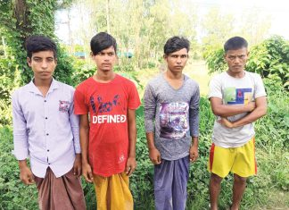

মঙ্গলবার , ২৬ সেপ্টেম্বর, ২০২৩ at ৬:০৮ পূর্বাহ্ণ
মাছের ট্রালারে চাকরি দেওয়ার কথা বলে ৫৬ দিন আগে বাকলিয়ার বাস্তুহারা কলোনি থেকে কিশোরকে নিয়ে যাওয়া হয় টেকনাফ। সেখান থেকে বিভিন্নভাবে হাতবদল হয়ে ওই চার কিশোরকে সমুদ্রপথে নিয়ে যাওয় হয় মিয়ানমারের সামিলা নামক এলাকার গভীর জঙ্গলে। সেখানে একটি এলাকায় নিয়ে জিম্মি করে রাখা হয়। চালানো হয় নির্যাতন।
পুলিশের বিভিন্ন ধরনের তৎপরতা ও অভিযানের মুখে এই ৪ কিশোরকে বঙ্গোপসাগরের তীরবর্তী লম্বরীঘাট নামক সাগরপাড়ে ফেলে যায় অপহরণকারী চক্র। গতকাল ভোরে সেখান থেকে তাদের উদ্ধার করেছে বাকলিয়া থানা পুলিশ। গ্রেপ্তার করা হয়েছে অপহারণকারী চক্রের ৫ সদস্যকে। তাদের কাছ থেকে পুলিশ পেয়েছে কঙবাজার–মিয়ানমার সীমান্ত ব্যবহার করে গড়ে ওঠা শক্তিশালী একটি অপরাধী সিন্ডিকেটের তথ্য, যেটি নিয়ন্ত্রণ করছে মূলত রোহিঙ্গা অপরাধীরা। গতকাল রাতে আজাদীকে এই তথ্য জানিয়েছেন নগরীর বাকলিয়া থানার ভারপ্রাপ্ত কর্মকর্তা (ওসি) আব্দুর রহিম।
বিস্তারিত